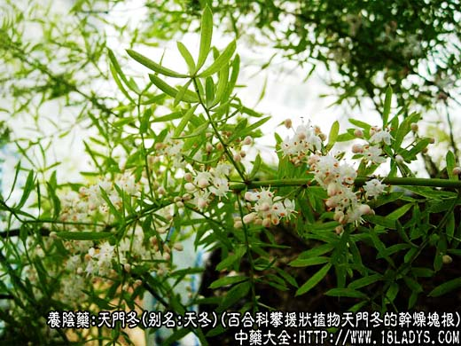
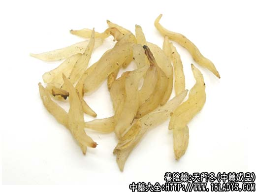
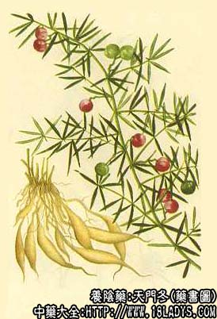

本品为常用中药。始载《神农本草经》，列为上品。
别名：天冬、明天冬。
来源：为百合科攀援状多年生植物天门冬的干燥块根。多位野生，亦有栽培。
产地：主产于贵州、四川、云南、广西、湖北、湖南、浙江等地。全国大部分地区均有分布。
采收加工：秋冬两级采挖，洗净泥土，剪去根头及须根、大小分开，入沸水中煮或蒸透后，捞出，浸入清水中，趁热除去外皮，洗净，微火烘干或用硫磺熏后再烘干，即成。
性状鉴别：本品呈长圆纺锤形，略弯曲，中部肥满，两端渐细而钝尖，长6～17厘米，中部直径0.7～1.5厘米，全体淡黄色或浅黄棕色，呈油润半透明状，有纵纹或纵沟。干透后质硬，未干透者质柔软。有粘性。断面蜡质样，颜色与外色相同，蒸煮不透的中间有不透明的白心。气微，味甘、微苦。以肥满、条大、淡黄色、半透明者为佳。
主要成分：含天门冬酰胺、β-固笛醇、5-甲氧基甲基糠醛。
功效与作用：滋阴润燥、清热化痰。其作用为镇咳、利尿、通便、强壮、并有抗菌作用，体外试验对金黄色葡萄球菌、溶血性链球菌、肺炎双球菌、白喉杆菌、炭疽杆菌等有抗菌作用。
炮制：切咀、生用。
性味：甘、苦、大寒。
归经：入肺、肾经。
功能：清肺抑火、滋阴润燥。
主治：劳热喘咳，咯血痰粘、津伤消渴，肠燥便秘。
临床应用：主要用于阴虚火旺，尤其虚热咳嗽者。
1、治肺虚咳嗽，适用于老年慢性气管炎和肺结核患者，尤其有粘痰难以咯出，久咳而偏于热者，可用天冬润燥化痰和滋补身体，常配生地、川贝、百合等，方如天门冬丸。
2、治肺痿、肺痈，取天冬凉润能解热，并配山慈姑、穿破石等解毒药，方如天破汤。
3、治阴虚发热，如贫血、结核病、病后体弱等之低热，配熟地补血，党参补气，方如三才汤。如为热病后期之阴虚兼有肠燥便秘，则配生地、火麻仁、当归等。
使用注意：脾胃虚寒和便溏者不宜服。
用量：6～15g。
处方举例：
1、天门冬丸《证治准绳》：天冬45g、百合、前胡、川贝、半夏、桔梗、桑白皮、防己、紫菀、赤苓、生地、杏仁各22.5g，共研细末，炼蜜为丸如梧桐子大，每服20丸，生姜汤送下，每日3次。
2、天破汤：天冬9g、麦冬9g、穿破石24g、山慈姑12g、铁包金24个、白蒺藜18g、黄芪15g、炙甘草45g，水煎服。
注：天门冬产区很广，由于土壤气候不同，加工后的块根大小及色泽有差异。一般来说贵州、四川、云南、广西方产区的产品条大肥壮、黄白色、光亮，每0.5公斤32～90支；湖北、湖南的产品，块根较小，淡黄色，粘性较重；浙江产品，块根以小条者居多，黄褐色至棕褐色，粘性亦重，每0.5公斤90～240支左右。